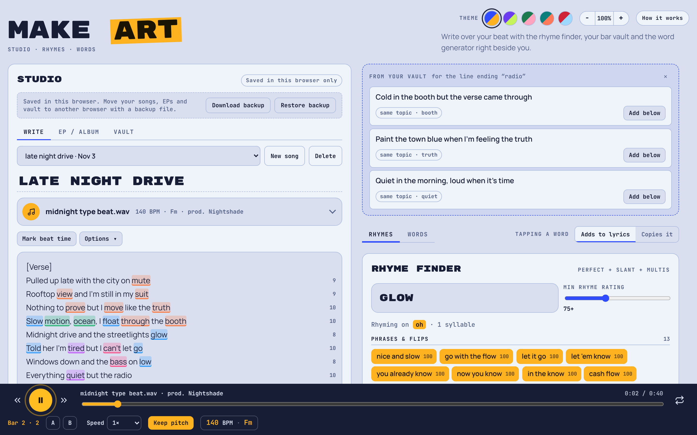

Write over the beat
Drag a beat onto the page and write. Space plays and pauses, the arrow keys skip back and forward, and you can stamp times on lines to jump back to a verse.
A free studio in your browser for writing over beats. Drop a beat, write your bars, and get rhymes, flips and your own saved lines right next to you.
No account. Nothing to install. Your songs stay in your browser.
Drag a beat onto the page and write. Space plays and pauses, the arrow keys skip back and forward, and you can stamp times on lines to jump back to a verse.
Words that rhyme light up in the same colour as you type, so you can see your scheme. Every bar shows its syllable count.
Perfect rhymes, slant rhymes and multis, each scored out of 100. Type two or three words and it finds phrases that match the whole flow.
Detected the moment a beat loads. Slow it down or speed it up, keep the pitch or let it move like a slowed edit, and loop just one section.
Save a line the second it hits you. While you write, the vault suggests saved bars that rhyme with your line or fit its topic.
Words you lean on across all your songs get flagged, like "drip ×12 in 3 songs", so the writing stays fresh.
Producer, link and licence saved with every beat, with a flag on anything you're not cleared to release.
Put songs in order, see the runtime, get name ideas and copy a tracklist with producer credits.
Classic, Grape, Moss, Lagoon and Cherry, each in light and dark.
There's no server and no account. Everything you write is saved in the browser you're using, and nothing is sent anywhere.